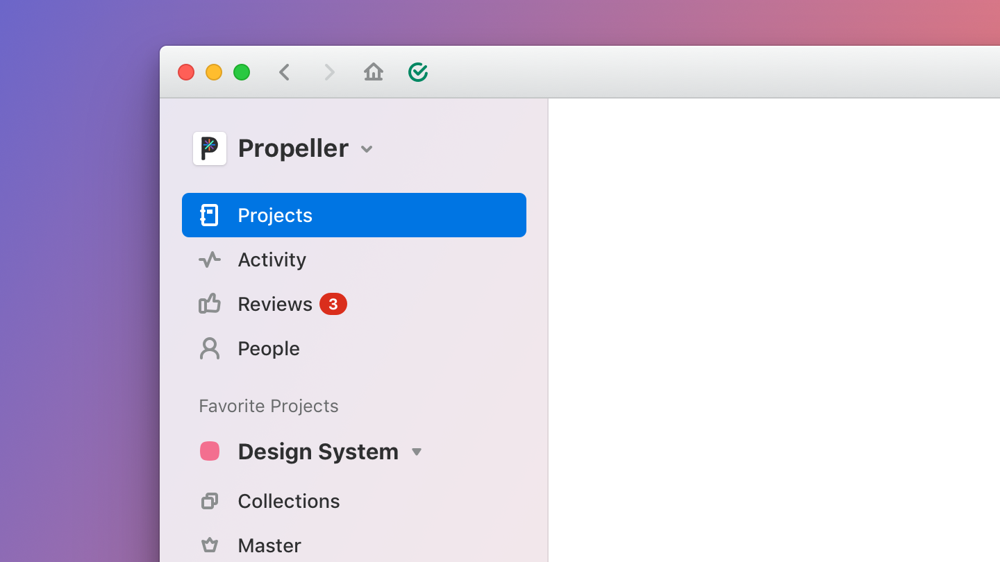

Abstract Global Navigation
Bringing ergonomics to the app
Through countless research efforts, we’d seen usage of Abstract begin to look different than when it had first launched. Customers were swapping constantly between projects (repos) and branches, to get their work done in a given day. The current navigation couldn’t hold up to the needs of the customers, allowing only one project to be available at any given time. Being a daily work app, little bits of friction like this meant massive frustration because of constant repetition. We needed something more ergonomic to the needs of our users.
The old experience
Before, the global navigation would physically change as the user moved up and down the hierarchy of the app. This meant a severe reorientation each time. That became an issue especially paired with how often this occurs. We were seeing users move between projects over time going up and up and up as Abstract grew within an organization.
Other aspects that took up the majority of the space were also not often needed or used. We saw real opportunity focusing far more on how people realistically used our navigation.
The new experience
Global navigation should be just that: global. The first thing to do was combine all of our navigation together. This meant some aspects would need to have more prominence and others would need to be minimized.
In order to make sure the application could support our new experience, we also had to consider what we were going to affect when it came to performance. Before, all the branches in a single project were visible. But now, an unlimited number of projects could be seen at once, meaning every project’s branches would need to be loaded too. Based on how this had previously been architected, we needed to find compromises to make sure we didn’t ruin the snappy performance our current UI maintained. We opted to limit branches, showing 6 to start and letting users expand for more. Since we always showed the most recently updated 6, we didn’t impact users very much but it was something we monitored after launch to make sure of.
We were even able to add information users had been requesting: showing a small icon to represent which stage in the design process the given branch was at. A more condensed design made way for this improvement.

The new experience was launched on July 1, 2020.